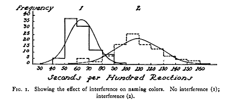

Let’s start by making some simple and some not-so-simple judgments …
Which of these two cars is closer?
Which is bigger?


Which number is bigger?
Some judgments feel easy and some judgments feel hard. What’s the difference?
Daniel Kahneman proposed that the reason for this difference is that there are two different systems that are involved in the judgment and decision making process.
In his Dual Process Model of judgment, easy decisions feel easy because they use an automatic system (unimaginatively called System 1) that processes information quickly and unconsciously. Hard decisions lean on a conscious system (System 2) that is more flexible than System 1 but slower and involves mental effort.
Note that these systems are not (necessarily) implemented by differnet areas of the brain, although that’s been proposed with varying levels of seriousness (c.f. lizard brain). Instead the two systems are different cognitive systems that may involve multiple, overlapping neural systems.
System 1 is the unconscious system. It is
When System 1 works it is amazing!
Consider the car example again …Just by looking at this image, within a fraction of a second you can tell me which car is closer. You could also very quickly hazard a guess as to what time of year it is and where in the US this picture was taken (i.e. certainly not in Arizona!).
None of these things is easy from a computational perspective. It’s only in the last few years that we’ve developed computers and algorithms powerful enough to get even close to the performance of humans on tasks like these.
Complete the phrase:
Reading is a System 1 process - at least if you are reading in your native language, you’re not in first grade
Coming up with a story for this photoSystem 1 is really good at judging things we are experienced in such as
* Understanding facial expressionsBut it’s not good for new problems
And System 1 can be tricked …
Which of these tables is longer?

You may be familiar with this table illusion (which was created by Roger Shepard in 1990) and you may know for a fact that the tables are actually the same size. Even so, it is very hard not to perceive them as being different.
This is the crazy thing about System 1 even when you know it is leading you astray, it is almost impossible to overcome the automatic perceptions of System 1
The paintings of M. C. Esher (which inspired the scene below from the 1986 movie Labyrinth) are based on this

Another example is judging which of these two houses is more expensive. System 1 says it surely must be the one on the right, but in fact the house on the left is worth almost 10 times more, selling for three million dollars in 2018!

While System 1 is fast, effortless and flexible, System 2 is the exact opposite. It is
Some example of System 2 processes are the not-so-simple Math Problems


Even professional marathon runners — who train their whole lives and are literally paid to maintain a fast running pace — run faster when they have pacemakers! Indeed the effect of pacemakers is so big that there are separate world records for paced versus unpaced runs
For women the difference is about 90 seconds
For men the difference is close to a whopping 3 minutes (although the push to run a sub 2-hour marathon lead to some other crazy things going on in that case such as the pacemakers forming a protective shield from the wind!)
System 2 is incredibly flexible. It can handle (or at least try to handle) almost any problem you throw at it. But …
This flexibility comes at the cost of speed and effort. Utilizing System 2 feels effortful.
Kahneman’s theory says that the two systems aren’t completely separate and that in fact they work together to make judgments and decisions.
System 1 generates impressions, intuitions, intentions and feelings
These are passed along to System 2 which accepts them and turns them into beliefs and voluntary actinos
When System 1 runs into difficulty it calls on systems 2 for more support
Most of the time this works well. For example, when judging the pictures of Serena Williams, System 1 makes a guess at her emotions quickly and automatically. This information is then passed to System 2 which can make the judgment about which one is a picture of her winning.


Most of the time the two systems work together well and we make good judgments and decisions (Otherwise driving would be impossible). However …
Hopefully that was easy. The words and the font colors match.
Now try naming the font color for these wordsHopefully this feels much harder and when people are asked to do this repeatedly in the lab they are slower to name the colors where there’s mismatch

In the Stroop task, System 1 is great at reading the words and has been trained that the font color doesn’t matter (except to make things look nice). To do the task properly, which requires you to pay attention to the font color, System 2 has to override this desire to simple read the word and instead must put a name to the color.